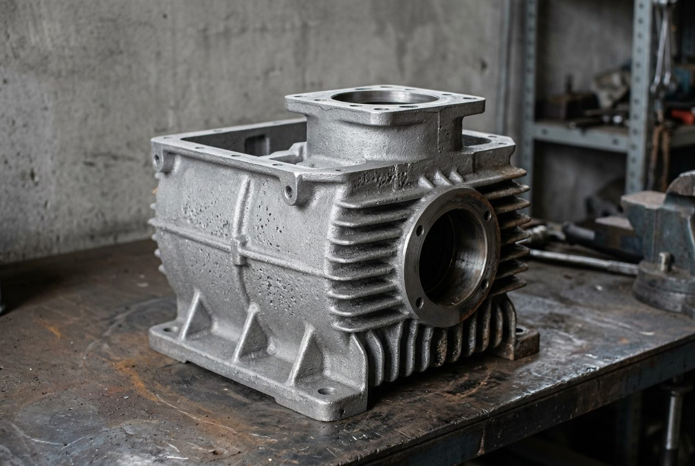
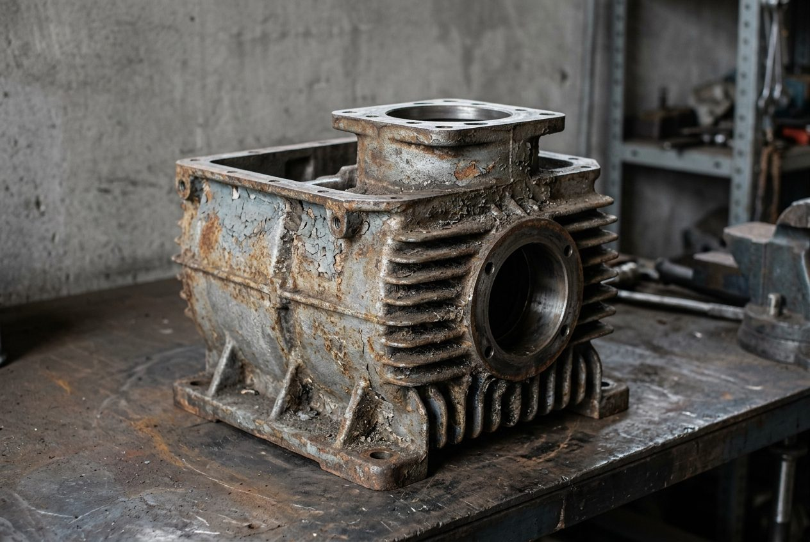
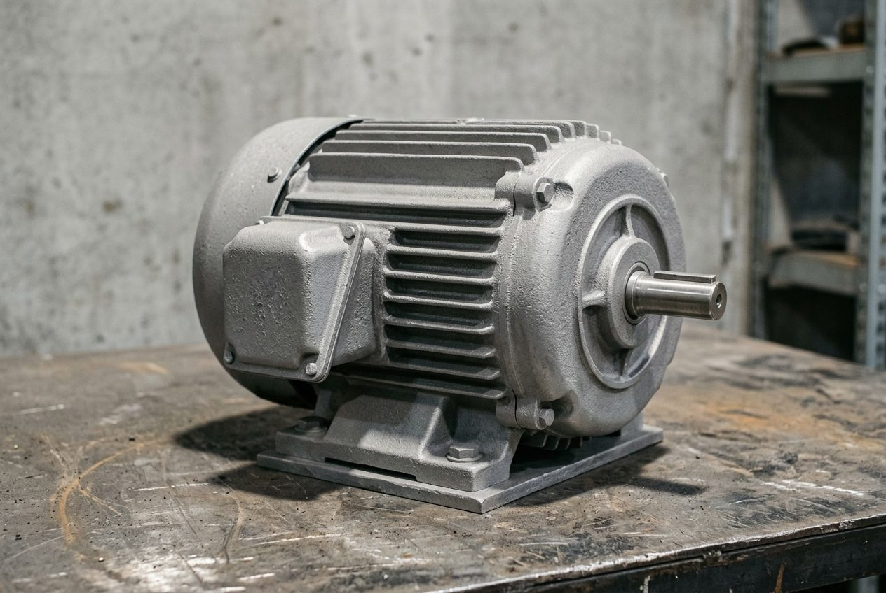
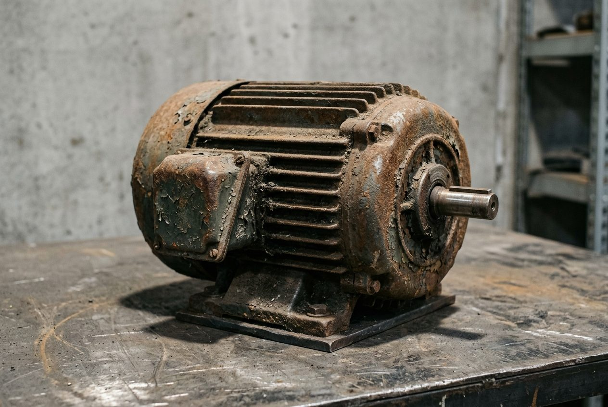
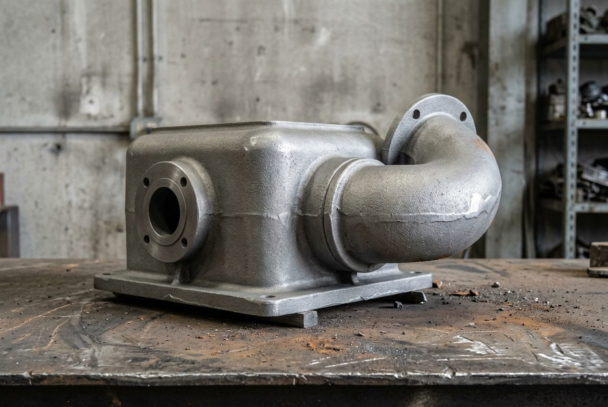
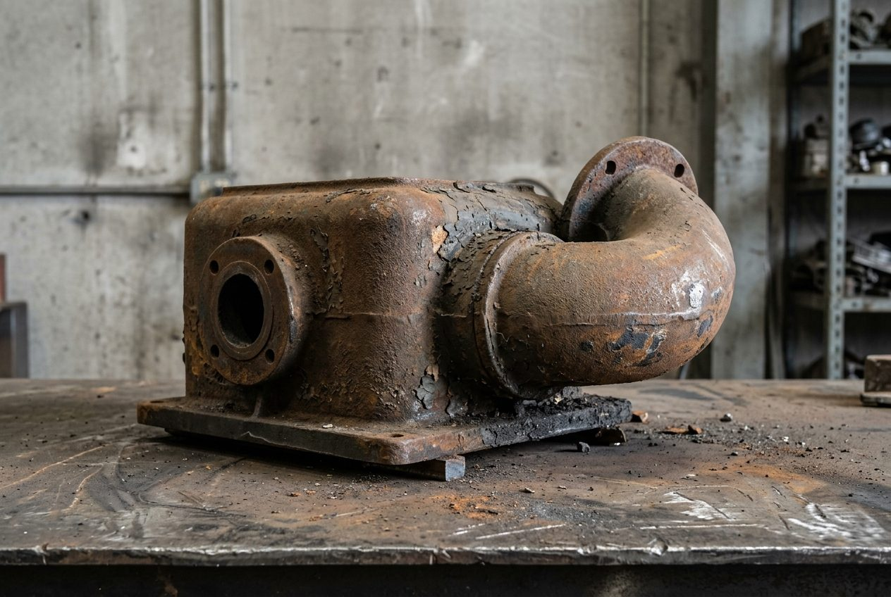
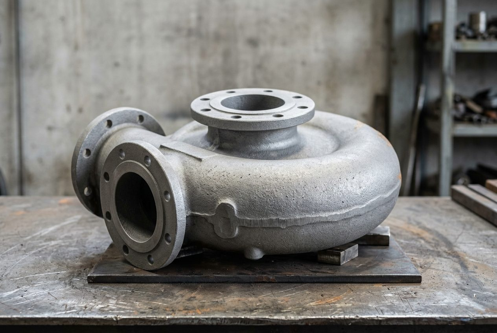
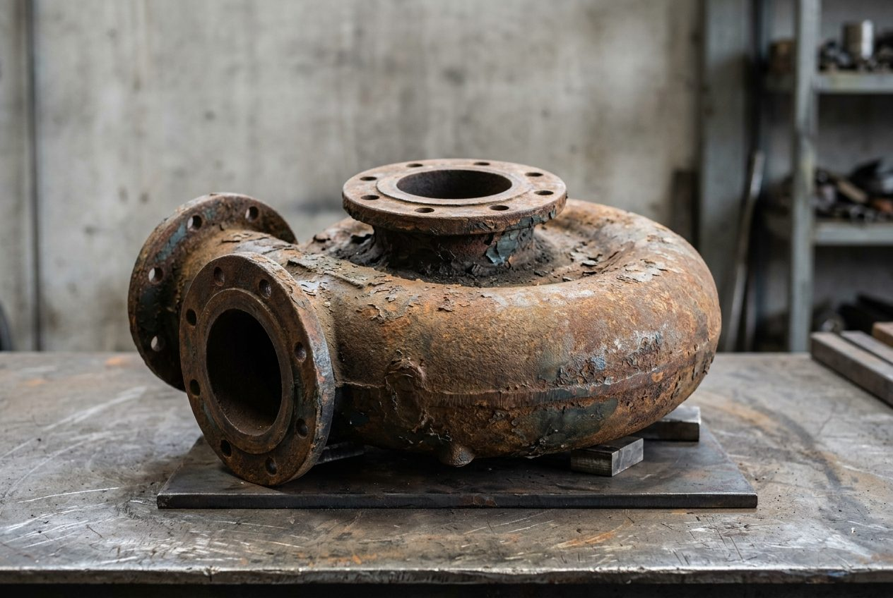
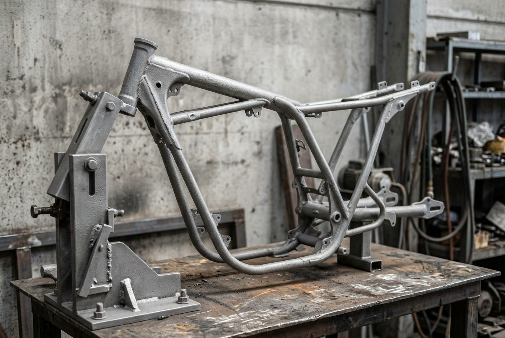
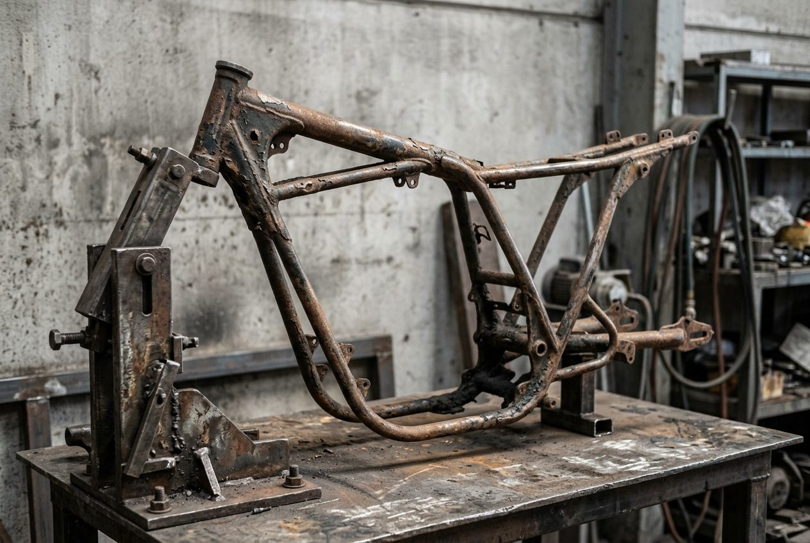

Se revisa la pieza antes de intervenirla
El tratamiento se define según el material, el estado de la superficie y las zonas que no deben alterarse. De esa evaluación dependen el abrasivo y la presión de trabajo.
Zonas mecanizadas: se protegen
Limpieza profesional de piezas metálicas por proyección de abrasivo. Se retira el óxido, la pintura vieja y la suciedad adherida, y la pieza queda en condiciones de volver al servicio: para pintarse, para soldarse o para evaluar su estado real.
Se retira el óxido, la pintura vieja y la suciedad adherida hasta dejar el metal a la vista.
La superficie queda preparada para recibir el recubrimiento, sin trabajo adicional.
Plazo habitual de un lote pequeño, contado desde la recepción de las piezas.
Las zonas mecanizadas se protegen durante el proceso: la limpieza no modifica las medidas de la pieza.
El arenado no es lijar con aire: es proyectar un material abrasivo a presión hasta retirar todo lo que no es metal. Se trabaja en tres etapas, con control en cada una.
El tratamiento se define según el material, el estado de la superficie y las zonas que no deben alterarse. De esa evaluación dependen el abrasivo y la presión de trabajo.
El abrasivo se proyecta a presión sobre la superficie y arrastra el óxido, la pintura vieja y la suciedad adherida. La pieza no se deforma ni se rectifica: se limpia.
Se controla la superficie terminada. Si la pieza va pintada, se aplica la protección anticorrosiva. Si el recubrimiento se hará en su planta, se entrega sin pintar y lista para continuar el proceso.
Por lo general se trata de piezas que funcionan correctamente pero que ya no pueden pintarse, soldarse ni revisarse porque están cubiertas de óxido o de pintura vieja.
Hierro o aluminio, con superficies de apoyo que deben conservarse. Se retira la pintura, el aceite quemado y el óxido, y la pieza queda en condiciones de medirse, soldarse o pintarse.
Hierro · AluminioCarcasas con aletas de ventilación y tapa de bornes. Se trabaja con un abrasivo fino, a presión controlada, para limpiar sin deformar las aletas ni obstruir los canales de ventilación.
Sin deformaciónPermite conocer el estado real del material antes de reparar. Con la superficie limpia aparecen las fisuras que la pintura ocultaba, y la decisión de reparar o reemplazar se toma sobre información concreta.
Evaluación previaEl acero nuevo llega con una capa gris que parece limpia y no lo está. Si se pinta encima, el recubrimiento se desprende en las soldaduras. Se retira por completo antes de aplicar la pintura.
Antes de pintarMotos, bicicletas y automóviles. Restauración hasta el metal, sin decapantes químicos ni lijado manual: el abrasivo llega a las uniones donde la lija no entra y deja la superficie lista para la pintura.
RestauraciónEntradas de gases, múltiples, impulsores y cuerpos de válvula. Se retiran los restos del molde, las rebabas y el óxido, y la pieza recupera su forma original a la vista.
FundiciónAlcance. Se trabaja sobre piezas sueltas y conjuntos desmontados. Si la pieza no puede trasladarse, consúltenos y se evalúa la alternativa.
Desplace la línea sobre cada imagen. A la izquierda, la pieza en el estado en que llega; a la derecha, el resultado del proceso.










Las imágenes de esta sección son ilustraciones del resultado esperado y no corresponden a trabajos realizados. Serán reemplazadas por registros fotográficos de piezas tratadas.
Con estos tres datos se puede preparar una propuesta. Si falta alguno, la consulta se completa por teléfono.